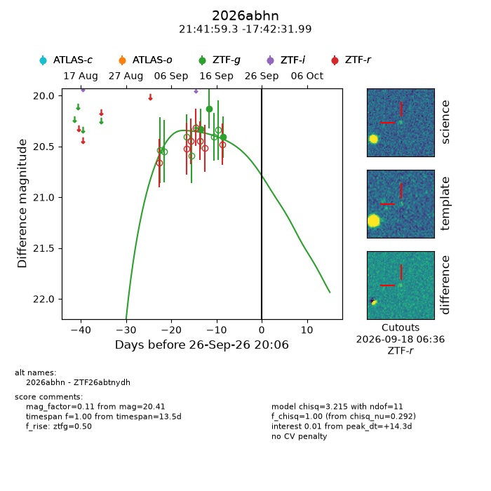
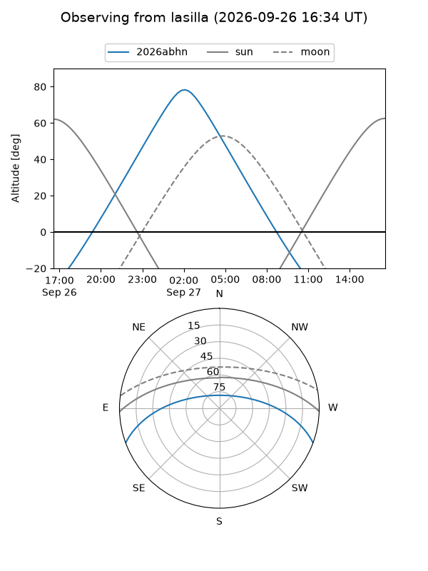
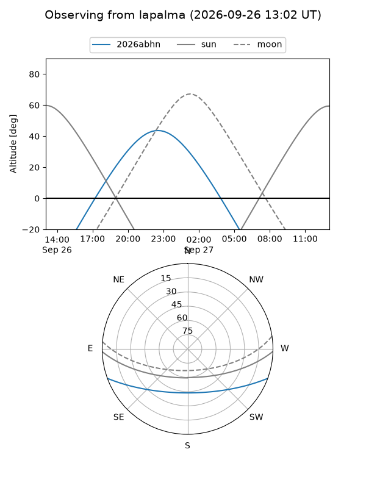
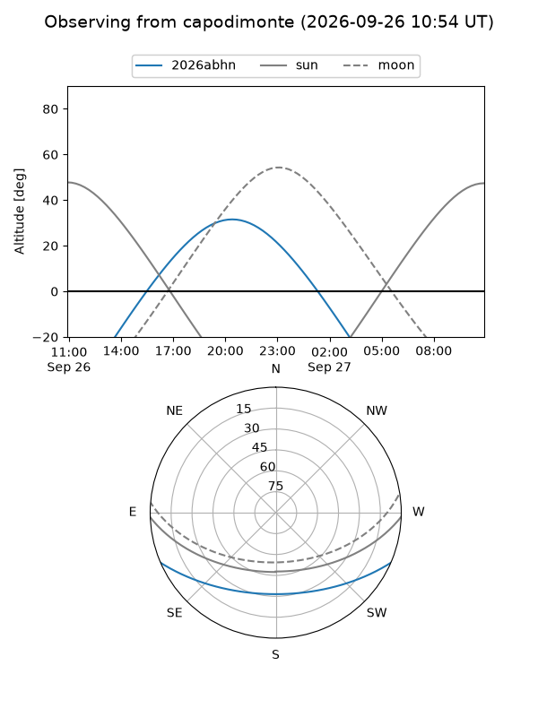
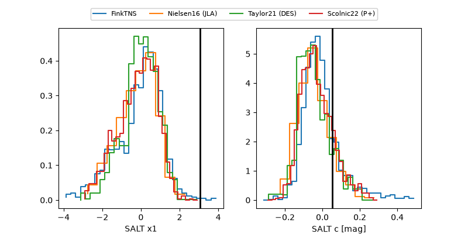

2026abhn
Target 2026abhn at 2026-09-27 07:33
Aliases and brokers:
FINK-ZTF: ztf.fink-portal.org/ZTF26abtnydh
Lasair-ZTF: lasair-ztf.lsst.ac.uk/objects/ZTF26abtnydh
ALeRCE-ZTF: alerce.online/object/ZTF26abtnydh
YSE-PZ: ziggy.ucolick.org/yse/transient_detail/2026abhn
TNS name: wis-tns.org/object/2026abhn
Direct TNS query: direct search
alt names
ZTF26abtnydh (ztf,fink_ztf)
2026abhn (tns,yse)
Coordinates:
equatorial (ra, dec) = 325.4969,-17.70889
equatorial (HMS+DMS) = 21:41:59.26,-17:42:31.99
galactic (l, b) = (34.8534,-45.47748)
Flags:
TNS type: nan
peak dt: +14.7
Photometry:
last ztfg=20.41
3 ztfg detections
Lightcurve

Visibility



Additional plots
